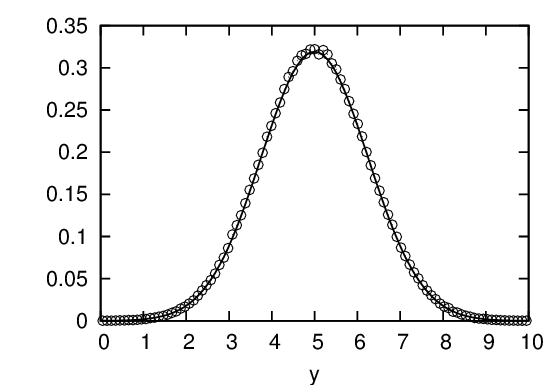
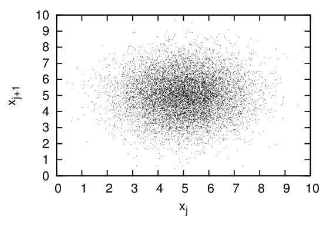

Consider the problem of generating random numbers that are distributed according to some kind of non-uniform distribution function. There are two methods of generating non-uniformly distributed random numbers satisfying a given distribution function, namely, the transformation method and the rejection method[4]. Let us examine these two methods in turn.
Suppose there are two random variables y and x that are related to each other by y = f(x). If the probability density of x, Px(x), is known, how do we calculate the probability of the random variable y? Using the probability conservation, i.e,
|
| (135) |
we obtain
|
| (136) |
which gives the relation between Py(y) and P(x). Next, consider the inverse problem of the above, i.e., if we want to generate non-uniform distribute random numbers y with probability density being Py(y) from a uniformly distributed random variables x, how do we choose the function f(x)? In this case, P(x) = 1 and Eq. (136) is written
|
| (137) |
which can be solved to give f(x). For a general function Py(y), Eq. (137) can not be solved analytically. For the special case Py(y) = e−y (Poisson distribution), we find that f(x) = −lnx solves Eq. (137). Therefore, we can generate Poisson distribution by the following Fortran codes:
Suppose that we want to generate non-uniformly distributed random numbers between xmin and xmax that satisfy a given probability density P(x). To achieve this, we first generate a uniform random number xt between xmin and xmax. Then we generate another uniform random number y between 0 and Pmax, where Pmax are the maximal values of P(x) for x ∈ [xmin,xmax]. If P(xt) > y then, xt is kept as a desired random number, otherwise xt is discarded. Repeat this process, then all the random numbers kept will satisfy the probability density P(x) (need thinking why, to be proved). This method is called the rejection method. It is obvious how the rejection method generalizes to multiple-dimensional cases.
The one-dimensional Gaussian distribution is given by
|
| (138) |
Figure 14 compares the possibility density of the 106 numbers generated by the numerical code with that of the analytic form in Eq. (138), which indicates that the numerical result agrees well with the analytic one.

Figure 15 is a plot of xj verse xj+1 for j = 1,2,…,104, which shows how the points (xj,xj+1) are distributed in the two-dimension plane.
